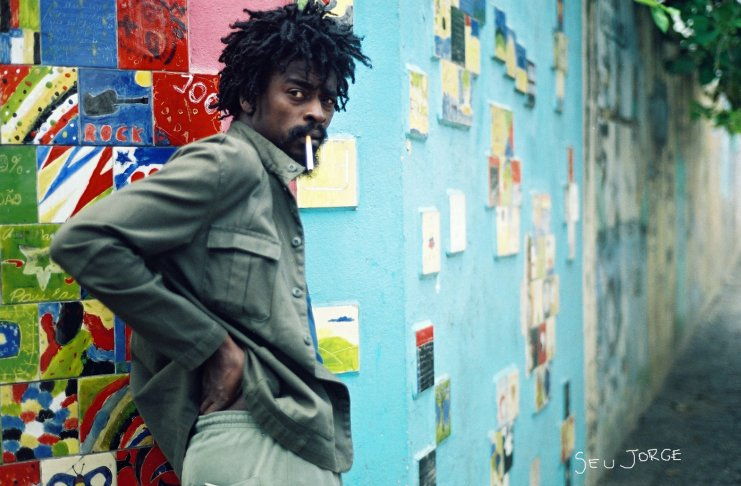

Voltar
Seu Jorge
Seu Jorge é um cantor, compositor, instrumentista e ator brasileiro.
Jorge Mário da Silva , conhecido como Seu Jorge, nasceu no bairro de Belford Roxo, no Rio de Janeiro, no dia 8
de junho de 1970. É sobrinho de Jovelina Pérola Negra e primo do sambista Dudu Nobre.

Seu Jorge
- 3x Vencedor do Grammy Latino: 2008, 2012, 2013
- Eleito o melhor cantor do anos de 2008 segundo o premio Mehlores do Ano(TV GLOBO).
- Premio Multishow de melhor CD (2006) e melhor cantor (2009).